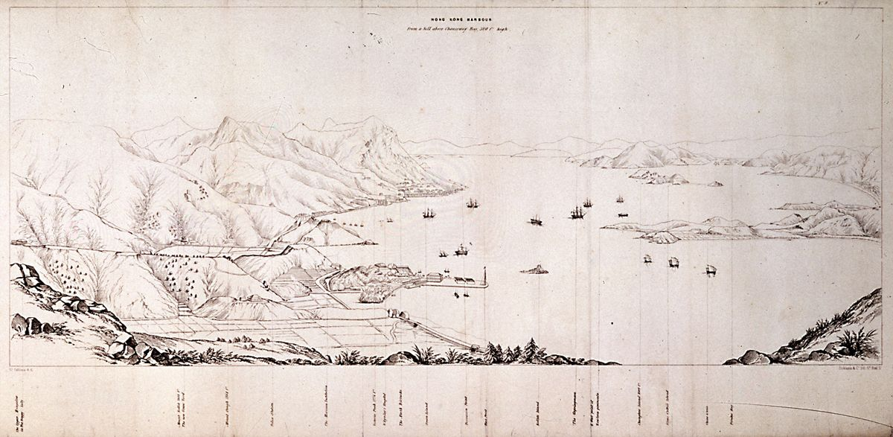

An index of
張善濤
A computer scientist at Imperial College London, by way of Hong Kong. He builds instruments for problems that have not been measured yet.

Hong Kong has a horizon that bends. Sea on one side, vertical city on the other, and a strip of weather running between them that no one has ever quite agreed on.
I learned, early, that one careful measurement — taken at the right place — can change everything you thought you knew about the system around it.
/ St. Paul's College, Hong Kong
/ Imperial College London, BSc Computer Science, 2027
/ 蘇黎世 — ETH Zürich, exchange, autumn 2026 incoming
/ Laidlaw Scholar, 2024 cohort
/ Qube Research & Technologies, summer 2025
/ 廣東話 first, then English, then 普通話
National-level competitor for Hong Kong in three Olympiads at once — Mathematics, Physics, and Informatics. Few train at altitude in one discipline. Even fewer carry that altitude across three.
A deep network that removes monochromatic metal artefacts from CT scans, so radiologists see what was hidden in the noise. Awarded the S.T. Yau High School Science Award in Computer Science — a prize founded by the Fields medalist Shing-Tung Yau.
A way to read microplastic concentration from the wind, without going in the water. Surface plastic measurably slows waves, so the well-known wind-to-wave-speed relation breaks. The physics-informed neural network learns the clean mapping from open ocean and reads the deviation as a microplastic signal — the wider the gap, the higher the concentration.
People ask about the deep ocean. The deep is where plastic mass eventually settles, past the reach of any cleanup; the surface is where intervention is still possible.1 Champion of the HKSTP–St. John's College Hackathon.
A web interface, written from scratch, so anyone can play chess against a quantum neural network. The pieces occupy several squares at once until you look.
A research report — Are climate finance models fit for purpose? — examining whether the models steering billions of dollars in climate spend are accurate enough to deserve the steering wheel. Laidlaw Scholar, 2024 cohort.
Summer at Qube Research & Technologies, working alongside people who treat a tenth of a basis point the way a watchmaker treats a tenth of a second.
Exchange semester at ETH Zürich, the school where Einstein learned to be wrong about gravity.